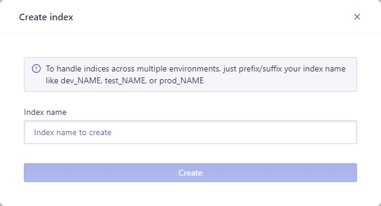
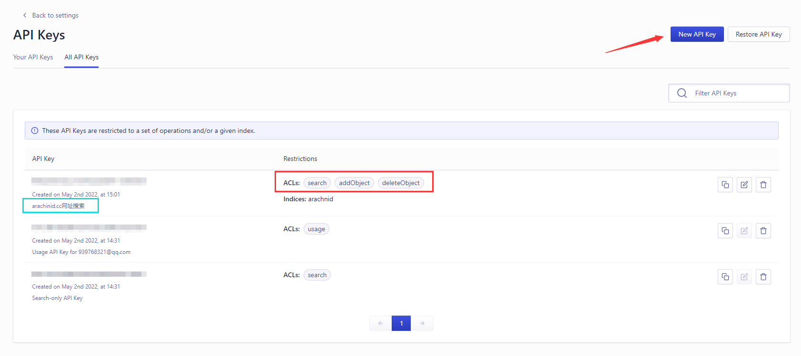
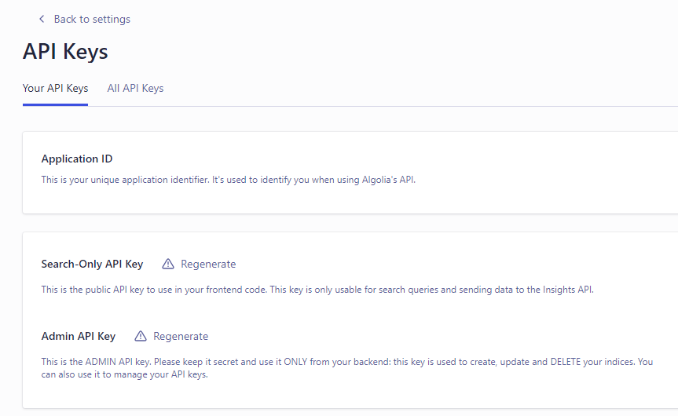
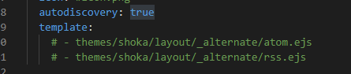
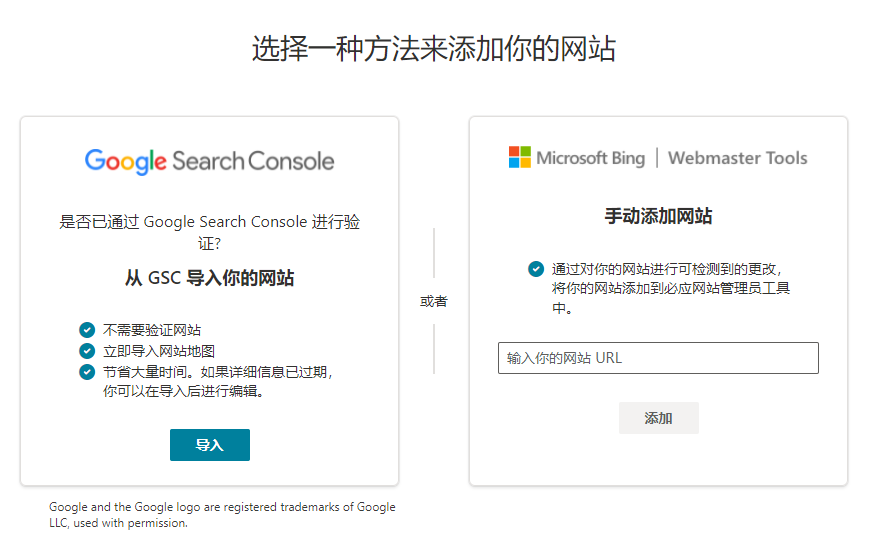
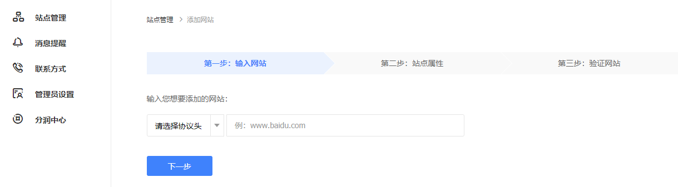
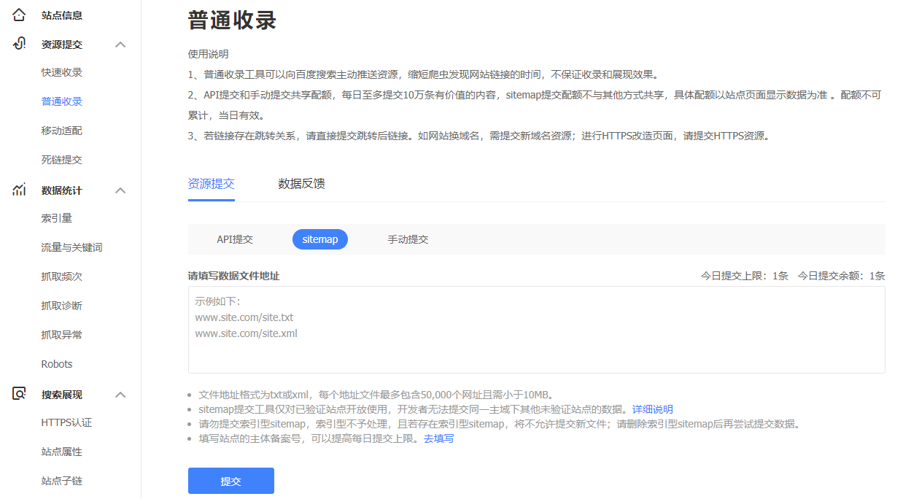

# 搜索功能
# algolia 搜索功能
algolia官方地址
需要安装 hexo-algoliasearch 插件。
注册 algolia，创建 Index：

获取 Key，修改站点配置：
新建 API Key：
获取相应的 Key，并填入配置信息：

在配置完 Key 后，回到终端控制台，键入以下命令上传数据到
algolia：hexo algolia
配置参考：
algolia: | |
appId: "Application ID对应码" | |
apiKey: "API Keys页面的All API Keys中刚刚新建的API key的对应码" | |
adminApiKey: "Admin API Key对应码" | |
chunkSize: 5000 | |
indexName: "你填写的Indices部分" | |
fields: | |
- title #必须配置 | |
- path #必须配置 | |
- categories #推荐配置 | |
- content:strip:truncate,0,4000 | |
- gallery | |
- photos | |
- tags |
注：每次更新修改文章后还需要执行 hexo algolia 的指令，否则，搜索数据没有或者对不上。
# 本地搜索功能
# valine 评价功能
# 字数及阅读时间统计
需要安装 hexo-symbols-count-time 插件。
安装后不需要修改站点配置文件，直接使用插件默认配置就行，如需进行配置，可参考：
# hexo-symbols-count-time | |
## shoka 主题默认采取了默认的配置，所以覆盖相应配置就行了 | |
symbols_count_time: | |
symbols: true | |
time: true | |
total_symbols: true | |
total_time: true | |
exclude_codeblock: false | |
awl: 4 | |
wpm: 245 | |
suffix: "mins." | |
#exclude_codeblock: 是否排除代码块区域的字数统计 | |
#awl: 平均字符长度 (多少符字算一个中文或英文) 中文约是 2，英文约是 5，其他约是 6 | |
#wpm: 每分钟阅读字数 正常值约为 275 字，较小值约为 200 字，较快值约 350 字 | |
#suffix: 当总字数小于每分钟阅读字数时，默认采取的时间类型，不填写默认类型采取 "mins." |
启用则需要找到 footer 和 post 的两处 count ，修改为 true ：
# 页尾全站统计 | |
footer: | |
since: 2010 | |
count: true | |
# 文章界面统计 | |
post: | |
count: true |
# 访问及阅读统计
LeanCloud 评价里面是有阅读访问统计，但是，目前由于 LeanCloud 国际版不对国内用户提供服务了，因此改用其它记录统计，这里可以使用简单的不蒜子计数，操作更改也比较简单： 引脚本 + 写标签
1、调用不蒜子的官方脚本，这个比较简单，在你需要的地方调用如下代码
# 引脚本 | |
<script async src="//busuanzi.ibruce.info/busuanzi/2.3/busuanzi.pure.mini.js"></script> | |
# 写标签 | |
<span id="busuanzi_value_page_pv"> # 当前访问页面次数 | |
<span id="busuanzi_container_site_uv"> # 站点访客次数 | |
<span id="busuanzi_container_site_pv"> # 站点访问总量 |
2、静态部署调用，这个需要在 <root>/source/js 路径下创建 busuanzi.pure.min.js 文件，如果 js 目录不存在则自己新建，并且把如下代码添加进去，并保存：
var bszCaller,bszTag;!function(){var c,d,e,a=!1,b=[];ready=function(c){return a||"interactive"===document.readyState||"complete"===document.readyState?c.call(document):b.push(function(){return c.call(this)}),this},d=function(){for(var a=0,c=b.length;c>a;a++)b[a].apply(document);b=[]},e=function(){a||(a=!0,d.call(window),document.removeEventListener?document.removeEventListener("DOMContentLoaded",e,!1):document.attachEvent&&(document.detachEvent("onreadystatechange",e),window==window.top&&(clearInterval(c),c=null)))},document.addEventListener?document.addEventListener("DOMContentLoaded",e,!1):document.attachEvent&&(document.attachEvent("onreadystatechange",function(){/loaded|complete/.test(document.readyState)&&e()}),window==window.top&&(c=setInterval(function(){try{a||document.documentElement.doScroll("left")}catch(b){return}e()},5)))}(),bszCaller={fetch:function(a,b){var c="BusuanziCallback_"+Math.floor(1099511627776*Math.random());window[c]=this.evalCall(b),a=a.replace("=BusuanziCallback","="+c),scriptTag=document.createElement("SCRIPT"),scriptTag.type="text/javascript",scriptTag.defer=!0,scriptTag.src=a,scriptTag.referrerPolicy="no-referrer-when-downgrade",document.getElementsByTagName("HEAD")[0].appendChild(scriptTag)},evalCall:function(a){return function(b){ready(function(){try{a(b),scriptTag.parentElement.removeChild(scriptTag)}catch(c){bszTag.hides()}})}}},bszCaller.fetch("//busuanzi.ibruce.info/busuanzi?jsonpCallback=BusuanziCallback",function(a){bszTag.texts(a),bszTag.shows()}),bszTag={bszs:["site_pv","page_pv","site_uv"],texts:function(a){this.bszs.map(function(b){var c=document.getElementById("busuanzi_value_"+b);c&&(c.innerHTML=a[b])})},hides:function(){this.bszs.map(function(a){var b=document.getElementById("busuanzi_container_"+a);b&&(b.style.display="none")})},shows:function(){this.bszs.map(function(a){var b=document.getElementById("busuanzi_container_"+a);b&&(b.style.display="inline")})}}; |
然后更改上面第一条代码的引用路径为本地路径，例如： <script async src="https://xxx.example.com/js/busuanzi.pure.min.js"></script> ， xxx.example.com 为你的部署网站。后面三行的代码的 <span id="xxx"> 不用变动，只需在合适的地方调用想用的计数代码即可。
3、举个例子，替换 shoka 主题原有的页面访问计数。在 <root>/themes/shoka/layout/_partials/post/footer.njk 文件中，添加并替换即可。如下图：

# RSS 订阅
需要安装 hexo-generator-feed 插件。
安装完成后，需要在 <root>/_config.yml 配置中添加如下信息，并填写自己需要的信息：
feed: | |
enable: true | |
type: atom | |
path: atom.xml | |
limit: 20 | |
hub: | |
content: | |
content_limit: 140 | |
content_limit_delim: ' ' | |
order_by: -date | |
icon: icon.png | |
autodiscovery: true | |
template: |
具体内容可参看：https://github.com/hexojs/hexo-generator-feed
当然，如果有能力的，可以自建 rss 模板，shoka 主题上也有提供，只需要如下调用模板即可：

最后，在需要获取 RSS 链接的地方添加 /atom.xml 即可。
# 站点运行时间
在配置站点页脚的 <root>/themes/shoka/layout/_partials/footer.njk 文件上，选择合适的地方添加如下代码：
<!--swig1--> | |
<div class="create_time"> | |
<span id="timeDate">加载日期...</span> | |
<span id="times">加载时间...</span> | |
<script> | |
var now = new Date(); | |
function createtime() { | |
var grt = new Date(''); | |
now.setTime(now.getTime() + 250); | |
days = (now - grt) / 1000 / 60 / 60 / 24; | |
dnum = Math.floor(days); | |
hours = (now - grt) / 1000 / 60 / 60 - (24 * dnum); | |
hnum = Math.floor(hours); | |
if (String(hnum).length == 1) { | |
hnum = "0" + hnum; | |
} | |
minutes = (now - grt) / 1000 / 60 - (24 * 60 * dnum) - (60 * hnum); | |
mnum = Math.floor(minutes); | |
if (String(mnum).length == 1) { | |
mnum = "0" + mnum; | |
} | |
seconds = (now - grt) / 1000 - (24 * 60 * 60 * dnum) - (60 * 60 * hnum) - (60 * mnum); | |
snum = Math.round(seconds); | |
if (String(snum).length == 1) { | |
snum = "0" + snum; | |
} | |
document.getElementById("timeDate").innerHTML = " 本站存活 " + dnum + " 天 "; | |
document.getElementById("times").innerHTML = hnum + " 小时 " + mnum + " 分 " + snum + " 秒"; | |
} | |
setInterval("createtime()", 250); | |
</script> | |
</div> | |
<!--swig3--> |
再在主题配置文件 <root>/themes/shoka/_config.yml 中添加：
# Runing Time | |
running_time: | |
enable: true | |
create_time: "01/01/1945 19:00:00" #此处修改你的建站时间或者网站上线时间 |
# SEO 优化及站点收录
辛辛苦苦搭好网站，当然是想跟其他人一起分享博文啦；但是，对于个人博客，如果没有被搜索引擎收录的话，别人在搜索引擎基本上是看不到的。那么如何查看个人博客网站是否被收录？只需要在对应的搜索引擎搜索框上输入：
site:your_website |
eg:

# Google 收录
谷歌收录相对简单，只需要准备一个谷歌账号，然后访问 Google Search Console 如下图：

先登录账号，然后再输入个人博客网站域名。然后弹出验证网站所有权窗口，这里一般选择 CNAME验证 ，接着根据提示操作即可，这里就不贴图，并且在你的网站管理那里添加给出来的 DNS 解析；最后等 DNS 更改生效，验证通过即可。完成后进入配置，添加站点地图链接，可能添加完后刷新会显示 无法获取 的状态，但其实是已经配置完成了。
# Bing 收录
进入 Bing Webmaster Tools ，这个可以选择使用 GSC 导入网站，只需要授权一下即可；或者手动添加通过 CNAME验证 添加，如下图：

通过后，同样的添加站点地图链接。
# Baidu 收录
访问 百度搜索资源平台 ，点击 用户中心 -> 站点管理 ，然后添加网站，一路到验证通过，这里同样的使用 CNAME验证 即可，当然选择其他的也行，哪种方便用哪种：

验证完毕后，找到 普通收录 ，选择 sitemap ，接着添加站点地图链接：

# 看板卡通模型
这里使用 live2d模块 ，比较简单。
安装插件 npm install --save hexo-helper-live2d ，选则安装所需的卡通模型：https://github.com/xiazeyu/live2d-widget-models ，例如，安装名为 unitychan 的模型：
npm install live2d-widget-model-unitychan |
配置插件，在 <root>/_config.yml 中添加及更改如下信息：
live2d: | |
enable: true | |
scriptFrom: local # 默认 | |
pluginRootPath: live2dw/ # 插件在站点上的根目录 (相对路径) | |
pluginJsPath: lib/ # 脚本文件相对与插件根目录路径 | |
pluginModelPath: assets/ # 模型文件相对与插件根目录路径 | |
tagMode: false # 标签模式，是否仅替换 live2d tag 标签而非插入到所有页面中 | |
debug: false # 调试，是否在控制台输出日志 | |
model: | |
use: live2d-widget-model-unitychan | |
display: | |
position: right #动画位置 | |
width: 210 | |
height: 380 | |
# 位置配置，这个在左侧边栏位置很居中 | |
hOffset: 50 # 调节水平位置 | |
vOffset: -25 # 调节垂直位置 | |
mobile: | |
show: false # 是否在移动设备上显示 | |
scale: 0.5 # 移动设备上的缩放 | |
react: | |
opacityDefault: 0.7 | |
opacityOnHover: 0.8 |